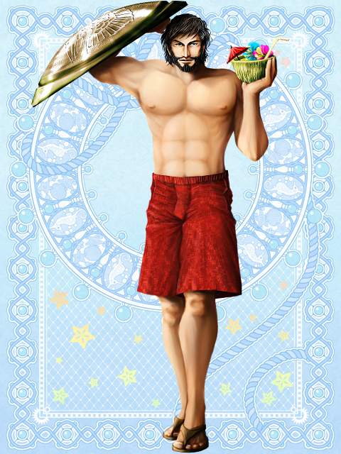

水着コン雑感
September 03, 2010
「エンドブレイカー！」で開催された水着コンテストに参加してきました。
チャンピオン部門で参加したのですが、結果は見事優勝。意外な結果に驚きです。
しかも２位の人と34ポイント差の大接戦。
やはり、「苦戦を強いられています」の文句が功を奏したのでしょうか……

この作品は、株式会社トミーウォーカーのＰＢＷ『エンドブレイカー！』用のイラストとして、ジョセフ・ホーヘスが作成を依頼したものです。
イラストの使用権はジョセフ・ホーヘスに、著作権は椎名 亨絵師に、全ての権利は株式...
試しにブログに投稿してみる
September 02, 2010
初めまして。
「自由・平等・そして寛容」のジョセフ・ホーヘス（c11046）のブログです。
たまに雑言をたれ流すこともあるかと思いますがよろしくお願い致します。
12 ページ中12 ページ